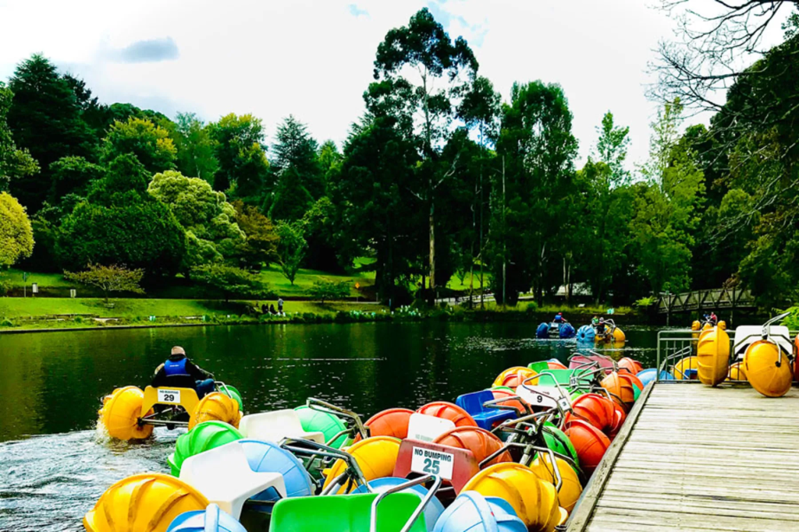
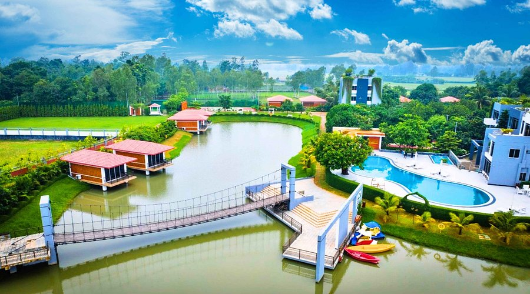
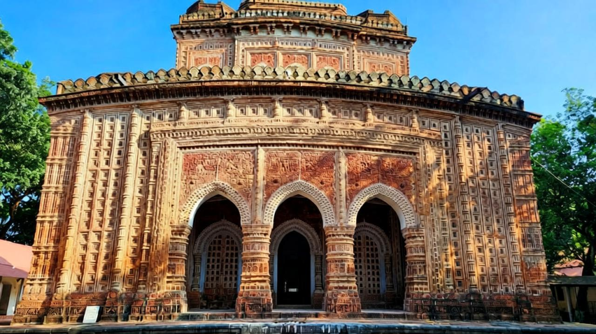
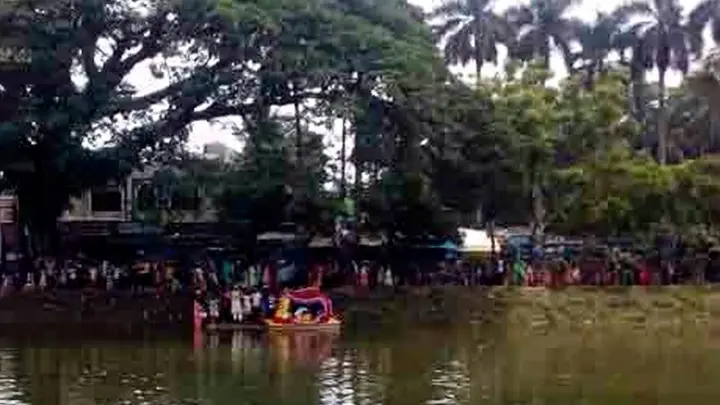

Tourist Places
Hidden gems of Gaibandha — from ancient zamindar palaces to serene river ghats

Naldanga Palace — A Zamindar Time Capsule
This 18th-century Indo-Saracenic mansion in Sundarganj Upazila, once home to the influential Naldanga zamindars, boasts crumbling terracotta arches, lotus ponds, and vine-draped durbar halls evoking feudal opulence. Explore hidden chambers filled with faded murals and local lore of royal intrigues. Entry BDT 20; guided folklore tours BDT 100.
Sundarganj Upazila

Bardhan Kuthi — Colonial Trade Relic
Built in the 19th century as a British indigo factory in Fulchhari Upazila, this red-brick warehouse-turned-museum overlooks the Jamuna, showcasing artifacts from the Opium Wars era — rusted machinery, trade ledgers, and eerie underground cells. Climb the watchtower for panoramic river views. Entry BDT 10; audio guides BDT 50.
Fulchhari Upazila

Mir Bagan Mosque
Nestled in a mango grove in Saghata Upazila, this 16th-century Sultanate-era mosque features ornate terracotta mihrabs with floral motifs and Quranic calligraphy, drawing pilgrims for its tranquil courtyards and annual urs fairs. Meditate amid ancient banyans; 2025 eco-trails link it to nearby char villages. Free entry.
Saghata Upazila

Balashi Ghat — Historic Ferry Crossing
At this historic ferry ghat in Fulchhari, once Bangladesh's only rail ferry crossing (1938–1990s), hop a country boat (BDT 100/hour) for dolphin-spotting cruises amid swirling eddies and char islands. Solar-powered eco-boats promote sustainability. Watch ferries unload amid fisherfolk — a slice of riverine rhythm. Free access.
Fulchhari Upazila

Dreamland Educational Park
This 20-acre family haven in Gaibandha Sadar blends amusement rides, a central lake with paddleboats (BDT 50/hour), and educational zones on local ecology — with VR history exhibits on King Birat. Stroll shaded trails or enjoy ice cream stalls; ideal for kids. Entry BDT 30; full-day fun BDT 200.
Gaibandha Sadar

Sarovar Resort & Lakeside
Overlooking an artificial lake in Radhakrishnapur, this eco-resort offers bamboo huts, infinity pools, and Teesta-view bonfires — 2025 glamping tents host stargazing. Kayak the waters (BDT 150) or join cooking classes for river fish curries. Day pass BDT 200; overnight BDT 2,000.
Radhakrishnapur

Kantagir Temple Trails
In remote Ghoraghat Upazila, this 15th-century Hindu temple complex amid sal forests features carved stone idols and hilltop shrines — trek shaded paths for Garo folklore and birdwatching. 2025 trails add interpretive signs. Entry free; guide BDT 150. Monsoon mists enhance the ethereal vibe.
Ghoraghat Upazila

Gaibandha Municipal Park (Pouro Park)
This 15-acre urban oasis in Sadar features manicured lawns, a central fountain, and jogging tracks amid paddy views — with yoga pavilions and food kiosks serving pitha snacks. Families flock for evening kite-flying; free entry. A green lung for locals and visitors alike.
Gaibandha Sadar